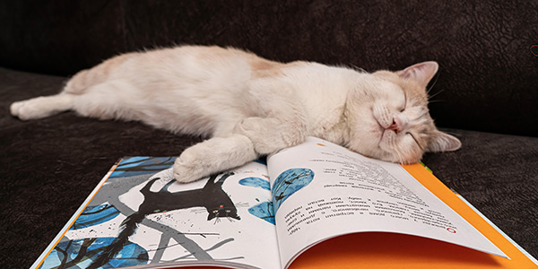
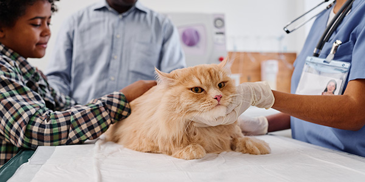
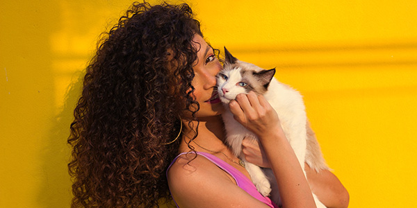
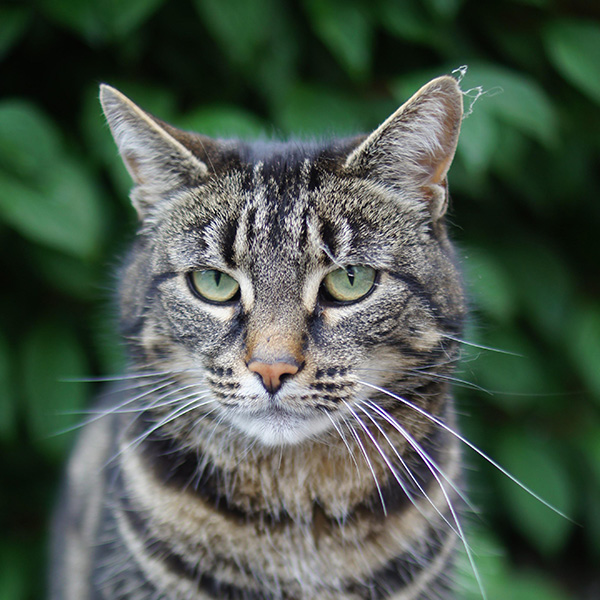
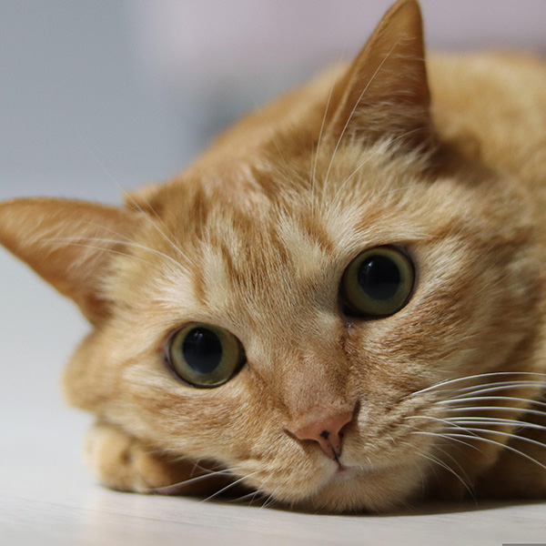
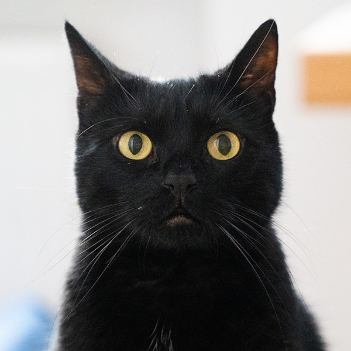

Photo Credit: Adobe Stock
Therapy cats are specially trained companions that provide emotional comfort, stress relief, and social connection in settings such as hospitals, nursing homes, and schools. At C.A.T.S., we highlight their gentle presence and the profound impact they make in people’s lives.

Photo credit: Pixabay
Travel to hospitals and schools.

Photo Credit: Adobe Stock
Live in a specific location such as a clinic or campus.

Photo Credit: Pixabay
Provide comfort to individual owners

Photo credit: pixabay
Luna is a gentle gray tabby who visits a local nursing home, where her quiet presence brings comfort to residents during their daily routines. She has a special way of curling up beside people who need a moment of calm.

Photo credit: pixabay
Milo is a playful orange cat who works with children in school programs, helping them feel more relaxed and open during reading and counseling sessions. His curious personality often turns nervous moments into smiles.

Photo credit: pixabay
Cleo is a calm and affectionate black cat who spends time in a community clinic, offering quiet companionship to patients in waiting areas. Her steady presence helps create a more peaceful and welcoming environment.
C.A.T.S. advocates for responsible training, awareness, and accessibility of therapy-cat programs across communities and shelters.
Learn How to Get Involved